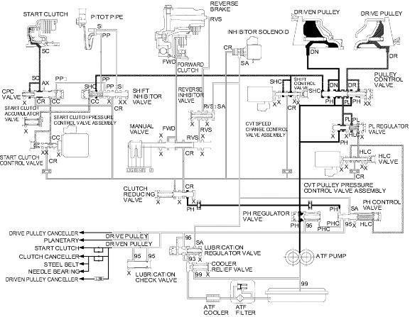

Position
Position
Honda Multi Matic Transmission/CVT
|
14-284 |
Hydraulic Flow (cont'd)
Position
Pulley pressure control when decelerating with applying brake
When the vehicle needs to accelerate after the vehicle decelerated with applying the brakes, the PCM turns inhibitor solenoid ON. The inhibitor solenoid is turned ON and SH-A pressure (SA) in the PH control valve is released. Then high pressure (PH) increases at the PH regulator valve and higher pressure flows to the driven pulley. The driven pulley receives high pressure and the pulley ratio is in low. The vehicle can accelerate in low pulley ratio.
